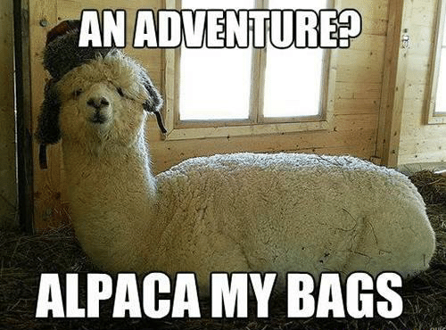

Alpaca Hüttengaudi
Anfahrt
Wanderrouten
Große
Katschbergrunde über das Gontal - Hanslbauerhütte
Panoramawanderung
Aineck
Leichte
Tour zu dem malerischen Karwassersee
Hüttschlag -
Murtörl - Muhr
Von der
Sticklerhütte zum Murusprung
Von
der Sticklerhütte auf das Weißeck
Ausgewogene Alpaca-Ernährung
- Spätzle mit Grünem Salat
- Palatschinken
- Chili con carne
- Spaghetti Bolognese
- Putenfleisch mit Sahnesauce und Reis
- Grießkoch
- Frankfurter
- Grillen
- Punsch
